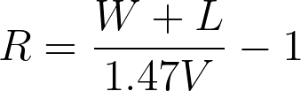
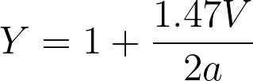
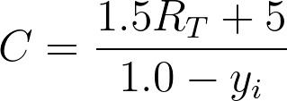
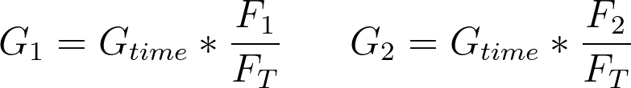

Civil Engineering
Design an Intersection
Instructions: Go to this link and pick one intersection to study. All members of the group will study the same intersection.
- Task 1: Assign the following jobs to each of your group members. If you have more than 4 people in your group, you can assign multiple people to counting<\li>
- Job 1: Flow 1 counter
- Job 2: Flow 2 counter
- Job 3: Flow 3 counter
- Job 3: Flow 4 counter

- Task 2: Make sure everyone can see the intersection. Set a timer for 15 minutes and begin counting how many cars flow in each direction. When the timer is up, record the numbers in table 1: row 1.
- Task 3: Multipy your 15 minute values by 4 to get your vehicals per hour and record in table 1: row 2.
- Task 4: The saturation flow rate for an intersection is the number of cars that could pass through an interection if the light were green at all times. Tranportation engineers use a combination of field studies and equations to calculate this for an intersection; however, the field studies can take many days. Therefore, we will use the average saturated flow rate for DC, which is 1306 vph.
- Determine whether flow 1 or flow 2 has a higher flow rate. Record in table 1: row 3.
- Determine whether flow 3 or flow 4 has a higher flow rate. Record in table 1: row 3.
- Determine your degree of saturation for each direction of your intersection by taking the values in row 3 and dividing by the average saturated flow rate for DC. Record those values in table 1: row 4.
- Deterime your sum total of degree of saturation by adding your values in table 1: row 4 together. Record this number in table 1: row 5
- Task 5: Determine the width of the intersection for phase 1 by take the total number of lanes for flow 1 and flow 2 and multiplying by 11 feet. Record in table 2: row 1.
- Task 6: Determine the width of the intersection for phase 2 by take the total number of lanes for flow 3 and flow 4 and multiplying by 11 feet. Record in table 2: row 1.
- Task 7: Determine the all red time for phases 1 and 2 by using the equation below. Write your results in table 2: row 2 In this equation:
- W=width of intersection
- L=length of vehical (assume 15 ft)
- V=speed limit (assume 30 mph)
- Task 8: Determine the yellow times for each phase by using the equation below. Write your results in table 2: row 3 In this equation:
- V=speed limit (assume 30 mph)
- a=deceleration rate (assume 10 mph)
- Task 9: Determine your total cycle length using the equation below. Record in table 2: row 4. In this equation:
- RT=all red time (sum of table 2: row 2)
- yi=sum total of degree of saturation (table 1: row 5)
- Task 10: Determine your total green time using the equation below. Record in table 2: row 5. In this equation
- C=total cycle length (table 2: row 4)
- Y1=yellow time for phase 1
- Y2=yellow time for phase 2
- RT=all red time (sum of table 2: row 2)
- Task 11: Determine your green time for phase 1 and phase 2 using the equations below. Record in table 2: row 6. In this equation
- G1=green time for phase 1
- G2=green time for phase 2
- F1=phase 1 flow (table 1: row 3)
- F2=phase 2 flow (table 1: row 3)
- FT=Total flow (sum of table 1: row 3)
- Task 12: Find your total time for each phase by summing the green time, yellow time, and all red time. Record in table 2: row 7
- Task 11: Check your work by summing the two numbers in table 2: row 7. This should equal your total cycle time. If it does not, go back and check your work.



